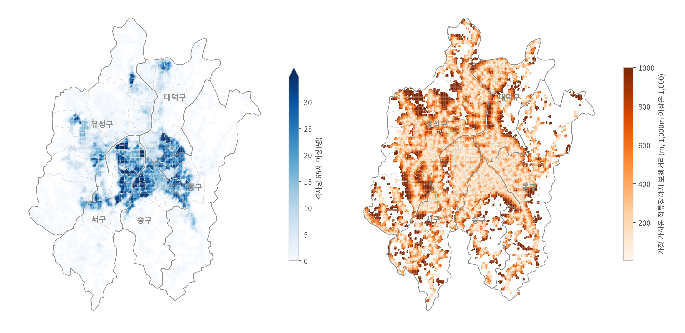
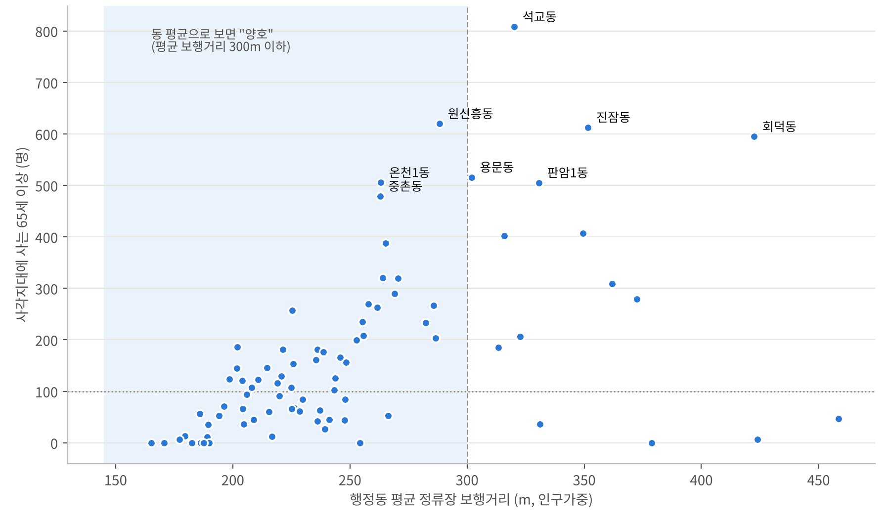
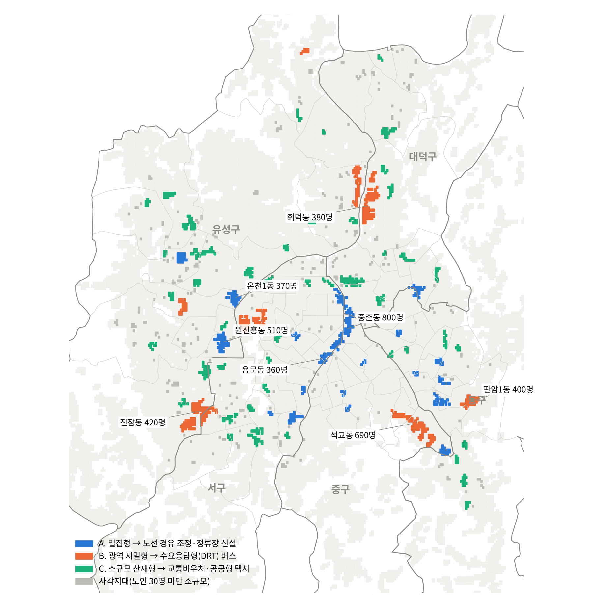
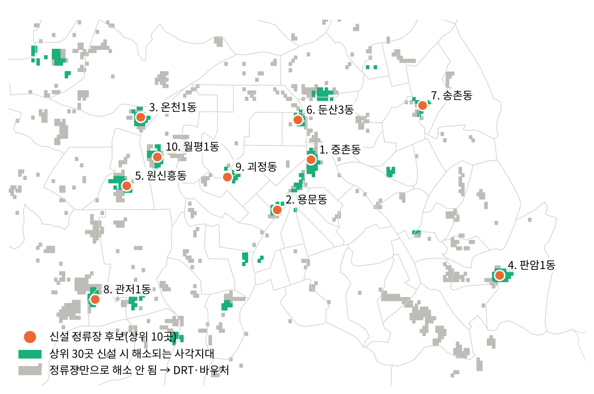
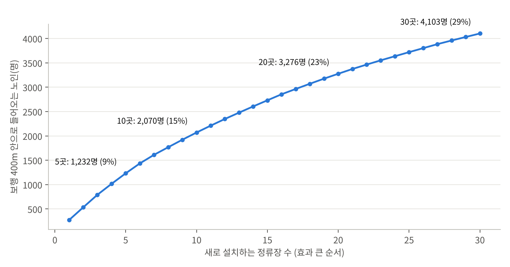

| 항목 | 내용 |
|---|---|
| 이름/팀명 | 이태희 (개인) |
| 주제 | 평균에 가려진 교통 사각지대: 대전 100m 격자·보행망 분석과 AI 입지 최적화로 찾은 노인 이동 격차와 유형별 처방 |
대전에서 대학을 다니며 버스가 잘 오지 않는 동네의 노인들을 자주 봤습니다. 동 평균 통계로는 보이지 않는 사각지대를 100m 단위로 찾아내고, 각 사각지대에 맞는 교통수단과 정류장 위치를 데이터로 제안하는 것이 이 분석의 목적입니다.
| 활용 데이터(명) | 제공기관 | 출처 플랫폼 | URL | 선정 이유 |
|---|---|---|---|---|
| 연령별 인구현황(행정동, 2026.9) | 행정안전부 | 주민등록 인구통계 | jumin.mois.go.kr | 동별 실제 노인 수 |
| 전국 대중교통 버스정류장 현황(2024.12) | 한국교통안전공단 | 공공데이터포털 | data.go.kr/data/15066754 | 정류장 수 검증 |
| 연령·성별 인구 100m 격자(2025, R2025A) | WorldPop(사우샘프턴대) | WorldPop Hub | hub.worldpop.org | 동 안 인구 위치 배분 |
| 버스정류장·노선·보행 도로망·생활시설 | OpenStreetMap 기여자 | Overpass API(2026.10.13 추출) | openstreetmap.org | 정류장 위치, 실제 보행거리, 병원·시장 위치 |
| 행정동 경계(2026.7) | vuski/admdongkor | GitHub | github.com/vuski/admdongkor | 동 단위 집계 |
이용조건: OpenStreetMap은 ODbL, WorldPop은 CC BY 4.0, 공공데이터는 공공누리 조건을 따릅니다. 모든 데이터는 공개 API나 공식 다운로드로 받았습니다.
분석 도구: Python(geopandas, OSMnx, NetworkX, scikit-learn, rasterio, matplotlib). 분석 코드: https://github.com/knightet/daejeon-transit-blindspot
| 구분 | 내용 |
|---|---|
| 사용 서비스 | Claude(Anthropic) — 데이터 수집 경로 탐색, 분석 코드 작성, 보고서 초안 작성 보조 |
| 활용 범위 | 공개 데이터 출처 조사, Overpass·WorldPop 수집 스크립트와 Python 분석 코드 작성, 결과 해석 초안 작성. 수치와 결론은 참가자가 공식 통계(주민등록 인구, 공식 정류장 수)와 대조해 직접 검증 |
| 주요 프롬프트 | "교통 데이터 공모전에서 수상 가능성이 높은 아이디어와 분석 방법을 찾아줘" / "대전 노인 교통 사각지대 분석에 필요한 공개 데이터를 모아줘" / "주민등록 연령별 인구로 격자 노인 인구를 보정해줘" / "정류장을 새로 만들 최적 위치를 찾는 분석을 추가해줘" |
| 분석 알고리즘(AI·최적화) | DBSCAN·K-평균 군집(scikit-learn), 최대커버링 입지(MCLP) 탐욕 최적화, 보행망 최단경로(다익스트라) |
| 데이터 보호 | 개인정보·비공개 데이터는 사용하지 않았고, 공개 집계 데이터만 AI에 입력 |
대전 65세 이상 288,572명 중 약 14,000명(13,962명)이 교통 사각지대에 삽니다. 구별 사각지대 비율은 유성구가 7.3%로 가장 높습니다. 유성구는 노인 비율이 가장 낮은 구여서 신도시·외곽 개발지의 노선 공백이 원인으로 보입니다.
사각지대는 사실상 "정류장이 먼 곳"입니다. 사각지대 노인의 99.9%(13,945명)가 정류장 보행 500m 초과 기준에 해당하고, 노선 수(SAI)만 낮아 포함된 노인은 17명뿐입니다. 따라서 정류장 신설·DRT처럼 거리를 줄이는 처방이 맞습니다.
사각지대 노인에게 정류장만 먼 것이 아닙니다. 사각지대 노인의 20.9%는 병원·의원까지 1km 넘게 떨어져 있고(중앙값 725m), 10.0%는 시장·마트까지 1km가 넘습니다(OSM 시설 기준). 버스 접근성이 곧 진료·장보기 접근성입니다.


동 평균으로 "양호"한 67개 동 중 35개 동에 사각지대 노인이 100명 이상 삽니다. 전체 사각지대 노인의 56%(약 7,800명)가 이런 동에 있습니다. 대표적으로 원신흥동, 온천1동, 중촌동, 복수동입니다. 평균만 보는 행정에서는 이 노인들이 보이지 않습니다.

| 유형 | 생활권 | 노인 수 | 격자당 노인 | 평균 보행거리 | 처방 |
|---|---|---|---|---|---|
| A. 밀집형 | 20곳 | 5,021명 | 17.5명 | 597m | 노선 경유 조정·정류장 신설 |
| B. 광역 저밀형 | 12곳 | 2,983명 | 6.2명 | 809m | 수요응답형(DRT) 버스 |
| C. 소규모 산재형 | 47곳 | 3,442명 | 7.9명 | 619m | 교통바우처·공공형 택시 |
노인 30명 이상인 생활권 79곳(11,446명) 기준. 30명 미만 소규모 사각지대는 그림 3에서 회색으로 표시했습니다.

| 순위 | 행정동 | 유형 | 해소 노인 | 누적 | 순위 | 행정동 | 유형 | 해소 노인 | 누적 |
|---|---|---|---|---|---|---|---|---|---|
| 1 | 중촌동 | A | 272명 | 272명 | 6 | 둔산3동 | A | 203명 | 1,436명 |
| 2 | 용문동 | A | 261명 | 533명 | 7 | 송촌동 | A | 176명 | 1,612명 |
| 3 | 온천1동 | A | 258명 | 791명 | 8 | 관저1동 | B | 156명 | 1,768명 |
| 4 | 판암1동 | B | 225명 | 1,016명 | 9 | 괴정동 | A | 155명 | 1,922명 |
| 5 | 원신흥동 | A | 216명 | 1,232명 | 10 | 월평1동 | B | 148명 | 2,070명 |

정류장 10곳이면 사각지대 노인의 14.8%(2,070명), 30곳이면 29.4%(4,103명)가 걸어서 400m 안에 버스를 탈 수 있게 됩니다. 처음 10곳의 효율이 가장 높고 이후는 효과가 줄어듭니다. 정류장 신설만으로는 70% 이상이 남으므로, 수요응답형 버스와 바우처를 함께 써야 한다는 데이터 근거가 됩니다.
최적화는 유형을 가리지 않고 모든 사각지대를 대상으로 했습니다. 그 결과 상위 10곳 중 7곳은 A형(밀집형), 3곳(판암1동·관저1동·월평1동)은 B형(광역 저밀형) 생활권에 놓였습니다. 30곳 해소 인원 4,103명도 A형 2,551명, B형 696명, C형 523명, 소규모 사각지대 333명으로 나뉩니다. 이를 6장에서 A형은 정류장, B형 안의 후보지는 DRT 승하차 거점으로 나눠 씁니다.
| 탄소 감축 시나리오 | 노인 1인 하루 차량 통행 | 거리 | 전환율 | 연간 감축(전기 DRT) | 연간 감축(경유 DRT) |
|---|---|---|---|---|---|
| 보수 | 1회 | 3km | 20% | 469톤 | 173톤 |
| 중립 | 2회 | 4km | 30% | 1,875톤 | 1,579톤 |
| 적극 | 2회 | 5km | 50% | 3,906톤 | 3,611톤 |
가정: 생활권 노인 11,446명 기준, 승용차 배출계수 187gCO₂/km(국산차 평균, 수도권대기환경청), DRT 12대(B형 생활권 수) × 하루 150km, 경유 승합 450g/km. 생활권 노인 모두가 승용차(자가·동승·택시)로 이동한다고 본 상한 추정이며, 전기 DRT의 충전 전력 배출은 포함하지 않았습니다. 경유 DRT를 쓰면 보수적 시나리오에서 감축 효과의 63%가 상쇄되므로 전기 DRT가 탄소중립의 전제 조건입니다.
동 안의 노인 위치는 WorldPop 추정이고, 버스 배차간격과 경사는 반영하지 못했습니다. 정류장 후보지의 현재 노선 경유 여부와 설치 비용은 확인하지 못했습니다. 탄소 감축은 가정 기반 상한 시나리오입니다. 결선에서는 TAGO 배차간격·노선 경유 데이터와 현장 조사로 보완하겠습니다.